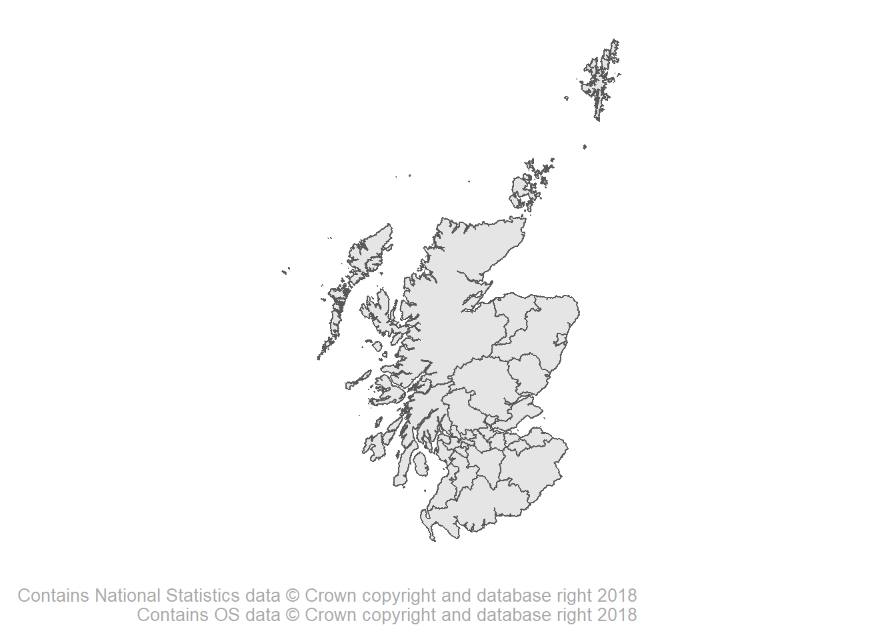

I want to create an R object (scotland_la.rds) that is a shapefile that I can easily load into any analysis and join to datasets at Scotland Local Authority level.
Effictively all I am doing here is taking the data cleaning phase of the shapefile out of the equation so I can create maps a little quicker in future.
I’ve downloaded the shapefile from the ONS geoportal from this link. It is a big file so will not be pushing it to Github.
The file includes all UK Local Authority data so the main thing is trimming it down to Scotland level.
I’ve also downloaded the “Data zone to intermediate zone, local authority, health board….” excel file from this link to use as a lookup for local authority names.
Firstly I’ll load the required packages, some plot settings, and set the working directory using here()
library(tidyverse)
library(sf)
library(readxl)
library(extrafont)
theme_set(theme_minimal(base_size = 16, base_family = "Roboto"))
library(here)
here()## [1] "C:/GitHub/clean_shapefile_scotland_LA"Now I’ll import the shapefile and the lookup data
scotland_la <- st_read(here("raw_data/shapefiles/Local_Authority_Districts_December_2017_Full_Clipped_Boundaries_in_United_Kingdom_WGS84.shp"))## Reading layer `Local_Authority_Districts_December_2017_Full_Clipped_Boundaries_in_United_Kingdom_WGS84' from data source `C:\GitHub\clean_shapefile_scotland_LA\raw_data\shapefiles\Local_Authority_Districts_December_2017_Full_Clipped_Boundaries_in_United_Kingdom_WGS84.shp' using driver `ESRI Shapefile'
## Simple feature collection with 391 features and 10 fields
## geometry type: MULTIPOLYGON
## dimension: XY
## bbox: xmin: -163.4997 ymin: 5410.413 xmax: 655515.6 ymax: 1220231
## epsg (SRID): NA
## proj4string: +proj=tmerc +lat_0=49 +lon_0=-2 +k=0.9996012717 +x_0=400000 +y_0=-100000 +datum=OSGB36 +units=m +no_defsla_lookup <- read_xlsx(path = here("raw_data/00534447.xlsx"),
sheet = "SIMD16 DZ look-up data") I need to clean up both files a little bit.
The shape file has every local authority in the UK - I just want Scottish Local Authorities. Here I also rename the variable lad17nm to council. This is the variable name I tend to use for Local Authorites in my anlayses and so when I join other datasets to the shapefile it will be “by” this variable.
The shapefile imported factor labels for the council and lad17cd variables - sometimes over 200 levels (as the LA names can be associated with datazone or lower output area codes as well). For now I am going to convert these to character variables as I don’t need these labels and it could cause problems with differing datasets.
scotland_la %<>%
filter(lad17nm %in% la_lookup$LAname) %>% #keep Scot LAs only
rename(council = lad17nm) %>% #rename what will be the "joining" variable to "council"
select(lad17cd, council, geometry) %>% #drop unneeded variables
map_at(c(1,2), as.character) %>% #coerce factor variables to character
as_data_frame() #coerce the whole object to a data_frame## Warning in out[sel] <- map(.x[sel], .f, ...): number of items to replace is
## not a multiple of replacement lengthA quick look at where we are now…
scotland_laOne of the most annoying things about working with public data is the differing nomenclature that can be used for Local Authorities. As you can see above, I already had to change the name of “Na h-Eileanan an Iar” to “Na h-Eileanan Siar” so it could be joined to the shapefile1. I have seen a third variation of this also. Furthermore, some offcial statistics are published with “Edinburgh, City of” as oppposed to what you can see in the table above. Throw in variaions with “&” and “and” and you can see the picture starts to become messy!
What I want to do is add rows with as many of these combination I can think of and copy the geometry from version that is in the shapefile. This way I should be able to left_join any dataset without having to rename indiviudal Local Authority names.
The geometry variable in scotland_la has a large list for every council with all the data required to draw the map. Duplicating is a little tricky but what I am going to do is extract the geometry for the councils that I am going to add additional variables for…
eilean_siar <-
scotland_la %>%
filter(council == "Na h-Eileanan Siar") %>%
.$geometry
edinburgh <-
scotland_la %>%
filter(council == "City of Edinburgh") %>%
.$geometry
dumfries <-
scotland_la %>%
filter(council == "Dumfries and Galloway") %>%
.$geometry
perth <-
scotland_la %>%
filter(council == "Perth and Kinross") %>%
.$geometry
argyll <-
scotland_la %>%
filter(council == "Argyll and Bute") %>%
.$geometry…now I can simply add rows to the dataframe with alternative names and plug in the extracted geometry variables where needed. Because all this wrangling has converted the scotland_la object to a data_frame under the hood, the last line in this chunk of code coerces it back to an sf object that can be mapped.
scotland_la %<>%
as_data_frame() %>%
add_row(lad17cd = "S12000013",
council = "Na h-Eileanan an Iar",
geometry = eilean_siar) %>%
add_row(lad17cd = "S12000013",
council = "Eilean Siar",
geometry = eilean_siar) %>%
add_row(lad17cd = "S12000036",
council = "Edinburgh, City of",
geometry = edinburgh) %>%
add_row(lad17cd = "S12000006",
council = "Dumfries & Galloway",
geometry = dumfries) %>%
add_row(lad17cd = "S12000024",
council = "Perth & Kinross",
geometry = perth) %>%
add_row(lad17cd = "S12000035",
council = "Argyll & Bute",
geometry = argyll) %>%
arrange(lad17cd) %>%
st_as_sf()Just a quick check that this has worked.
scotland_laAnd, at last, I can plot a blank map to see that it looks ok.
scot_plot <-
scotland_la %>%
ggplot() +
geom_sf() +
theme(line = element_blank(),
axis.text = element_blank(),
panel.grid = element_line(colour = "transparent")) +
labs(title = "Scotland",
subtitle = "shown with local authority administrative areas",
caption = "Contains National Statistics data © Crown copyright and database right 2018\nContains OS data © Crown copyright and database right 2018") +
theme(plot.caption = element_text(size = 10, colour = "#AAAAAA"))
scot_plot
I now have the object I wanted: scotland_la . I’ll save this as a .rds object which can be imported to any r session with the code load("/path_to_file/scotland_la.rds")
save(scotland_la, file = here("assets/clean_data/scotland_la.rds"))devtools::session_info()## Session info -------------------------------------------------------------## setting value
## version R version 3.5.1 (2018-07-02)
## system x86_64, mingw32
## ui RTerm
## language (EN)
## collate English_United Kingdom.1252
## tz Europe/London
## date 2018-09-05## Packages -----------------------------------------------------------------## package * version date source
## assertthat 0.2.0 2017-04-11 CRAN (R 3.5.0)
## backports 1.1.2 2017-12-13 CRAN (R 3.5.0)
## base * 3.5.1 2018-07-02 local
## bindr 0.1.1 2018-03-13 CRAN (R 3.5.0)
## bindrcpp * 0.2.2 2018-03-29 CRAN (R 3.5.0)
## broom 0.5.0 2018-07-17 CRAN (R 3.5.1)
## cellranger 1.1.0 2016-07-27 CRAN (R 3.5.0)
## class 7.3-14 2015-08-30 CRAN (R 3.5.1)
## classInt 0.2-3 2018-04-16 CRAN (R 3.5.0)
## cli 1.0.0 2017-11-05 CRAN (R 3.5.0)
## colorspace 1.3-2 2016-12-14 CRAN (R 3.5.0)
## compiler 3.5.1 2018-07-02 local
## crayon 1.3.4 2017-09-16 CRAN (R 3.5.0)
## datasets * 3.5.1 2018-07-02 local
## DBI 1.0.0 2018-05-02 CRAN (R 3.5.0)
## devtools 1.13.6 2018-06-27 CRAN (R 3.5.1)
## digest 0.6.16 2018-08-22 CRAN (R 3.5.1)
## dplyr * 0.7.6 2018-06-29 CRAN (R 3.5.1)
## e1071 1.7-0 2018-07-28 CRAN (R 3.5.1)
## evaluate 0.11 2018-07-17 CRAN (R 3.5.1)
## extrafont * 0.17 2014-12-08 CRAN (R 3.5.0)
## extrafontdb 1.0 2012-06-11 CRAN (R 3.5.0)
## forcats * 0.3.0 2018-02-19 CRAN (R 3.5.0)
## ggplot2 * 3.0.0 2018-07-03 CRAN (R 3.5.1)
## glue 1.3.0 2018-07-17 CRAN (R 3.5.1)
## graphics * 3.5.1 2018-07-02 local
## grDevices * 3.5.1 2018-07-02 local
## grid 3.5.1 2018-07-02 local
## gtable 0.2.0 2016-02-26 CRAN (R 3.5.0)
## haven 1.1.2 2018-06-27 CRAN (R 3.5.1)
## here * 0.1 2017-05-28 CRAN (R 3.5.0)
## hms 0.4.2 2018-03-10 CRAN (R 3.5.0)
## htmltools 0.3.6 2017-04-28 CRAN (R 3.5.0)
## httr 1.3.1 2017-08-20 CRAN (R 3.5.0)
## jsonlite 1.5 2017-06-01 CRAN (R 3.5.0)
## knitr 1.20 2018-02-20 CRAN (R 3.5.0)
## lattice 0.20-35 2017-03-25 CRAN (R 3.5.1)
## lazyeval 0.2.1 2017-10-29 CRAN (R 3.5.0)
## lubridate 1.7.4 2018-04-11 CRAN (R 3.5.0)
## magrittr 1.5 2014-11-22 CRAN (R 3.5.0)
## memoise 1.1.0 2017-04-21 CRAN (R 3.5.0)
## methods * 3.5.1 2018-07-02 local
## modelr 0.1.2 2018-05-11 CRAN (R 3.5.0)
## munsell 0.5.0 2018-06-12 CRAN (R 3.5.0)
## nlme 3.1-137 2018-04-07 CRAN (R 3.5.1)
## pillar 1.3.0 2018-07-14 CRAN (R 3.5.1)
## pkgconfig 2.0.2 2018-08-16 CRAN (R 3.5.1)
## plyr 1.8.4 2016-06-08 CRAN (R 3.5.0)
## purrr * 0.2.5 2018-05-29 CRAN (R 3.5.0)
## R6 2.2.2 2017-06-17 CRAN (R 3.5.0)
## Rcpp 0.12.18 2018-07-23 CRAN (R 3.5.1)
## readr * 1.1.1 2017-05-16 CRAN (R 3.5.0)
## readxl * 1.1.0 2018-04-20 CRAN (R 3.5.0)
## rlang 0.2.2 2018-08-16 CRAN (R 3.5.1)
## rmarkdown 1.10 2018-06-11 CRAN (R 3.5.0)
## rprojroot 1.3-2 2018-01-03 CRAN (R 3.5.0)
## rstudioapi 0.7 2017-09-07 CRAN (R 3.5.0)
## Rttf2pt1 1.3.7 2018-06-29 CRAN (R 3.5.0)
## rvest 0.3.2 2016-06-17 CRAN (R 3.5.0)
## scales 1.0.0 2018-08-09 CRAN (R 3.5.1)
## sf * 0.6-3 2018-05-17 CRAN (R 3.5.0)
## spData 0.2.9.3 2018-08-01 CRAN (R 3.5.1)
## stats * 3.5.1 2018-07-02 local
## stringi 1.2.4 2018-07-20 CRAN (R 3.5.0)
## stringr * 1.3.1 2018-05-10 CRAN (R 3.5.0)
## tibble * 1.4.2 2018-01-22 CRAN (R 3.5.0)
## tidyr * 0.8.1 2018-05-18 CRAN (R 3.5.0)
## tidyselect 0.2.4 2018-02-26 CRAN (R 3.5.0)
## tidyverse * 1.2.1 2017-11-14 CRAN (R 3.5.0)
## tools 3.5.1 2018-07-02 local
## units 0.6-0 2018-06-09 CRAN (R 3.5.0)
## utils * 3.5.1 2018-07-02 local
## withr 2.1.2 2018-03-15 CRAN (R 3.5.0)
## xml2 1.2.0 2018-01-24 CRAN (R 3.5.0)
## yaml 2.2.0 2018-07-25 CRAN (R 3.5.1)My wife’s first language is Scottish Gaelic and she assures me “Na h-Eileanan an Iar” is the grammatically correct way to pronounce “The Western Isles”, however somewhere in government “Na h-Eileanan Siar” has been deemed to be the offical spelling!↩